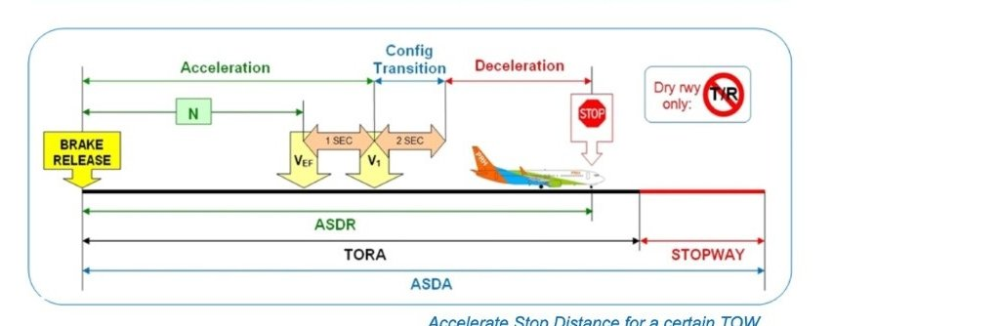
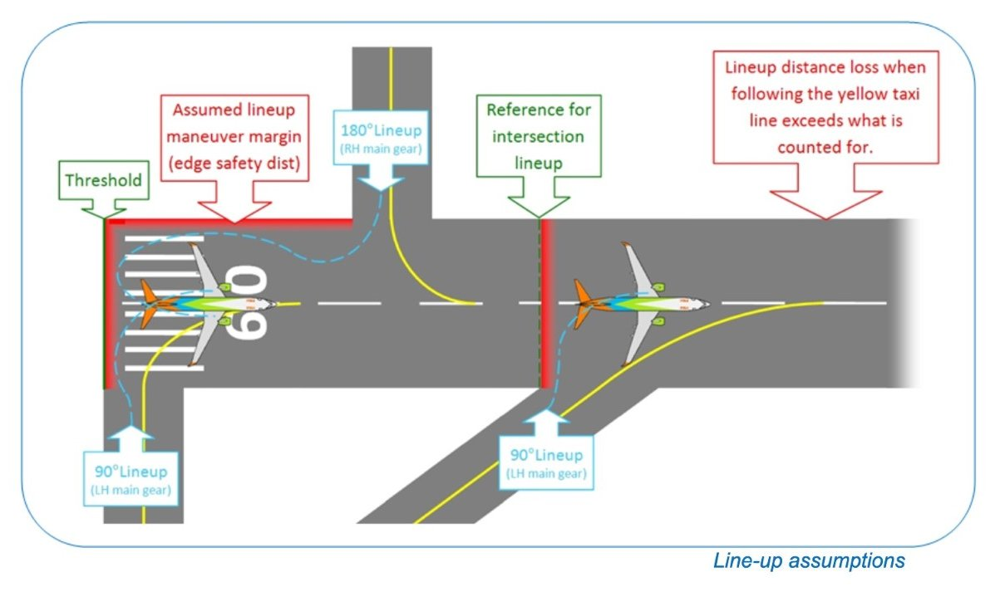

Lesson 02: Maximum Take-off Weight and Field Length
Learning objectives
- List the limits that make up the performance-limited take-off weight.
- Define TORA, TODA, ASDA, stopway and clearway.
- Explain the accelerate-stop and take-off distance requirements and the line-up correction.

The most limiting weight wins
The performance-limited take-off weight (PLTOW) is the lowest of the field length, climb, obstacle, tyre speed and brake energy limit weights, further reduced by MEL items. The maximum allowable take-off weight is the lowest of the PLTOW, the maximum certified structural take-off weight and the maximum allowable landing weight plus trip fuel.

Declared distances
- TORA — runway length declared available and suitable for the ground run.
- ASDA — TORA plus stopway (if declared). Stopway: at least as wide as the runway, able to support the aeroplane during a rejected take-off.
- TODA — TORA plus clearway. Clearway: under airport control, at least 500 ft wide, no object above a 1.25 % plane, not longer than half the TORA.


Accelerate-stop distance
The accelerate-stop distance is the distance to accelerate with all engines to V1 (including one second between VEF and V1), to keep V1 for two seconds while the stopping configuration is set, and to decelerate to a full stop. On a dry runway no credit is taken for reverse thrust; on a wet or contaminated runway one reverser may be credited. Brakes are assumed fully worn (CS 25.101).

Take-off distance and run
CAT.POL.A.205 requires: accelerate-stop distance ≤ ASDA, take-off distance ≤ TODA, take-off run ≤ TORA. The take-off distance is the longer of the distance to 35 ft with an engine failure at VEF, and 115 % of the all-engine distance to 35 ft. The field length limit weight is the lower of the ASD-limited and TOD-limited weights.
Line-up correction
Lining up uses runway. Whenever the aeroplane cannot start at the threshold, the available distances are reduced (CAT.POL.A.205): ASDA by the threshold-to-nose-gear distance, TODA by the threshold-to-main-gear distance, taking the minimum edge safety distance into account.


Use the data computed for the actual intersection. Company take-off data normally already include the standard line-up corrections.
Key takeaways
- Max allowable TOW = lowest of PLTOW, structural TOW, and max landing weight + trip fuel.
- ASD ≤ ASDA, TOD ≤ TODA, TOR ≤ TORA.
- No reverse thrust credit on a dry runway; brakes assumed fully worn.
- Correct ASDA to the nose gear and TODA to the main gear for line-up.
Knowledge check
Which distance may include a stopway?
- TORA
- TODA
- ASDA
- LDA
Answer: C. ASDA = TORA + stopway; clearway is added to TODA.